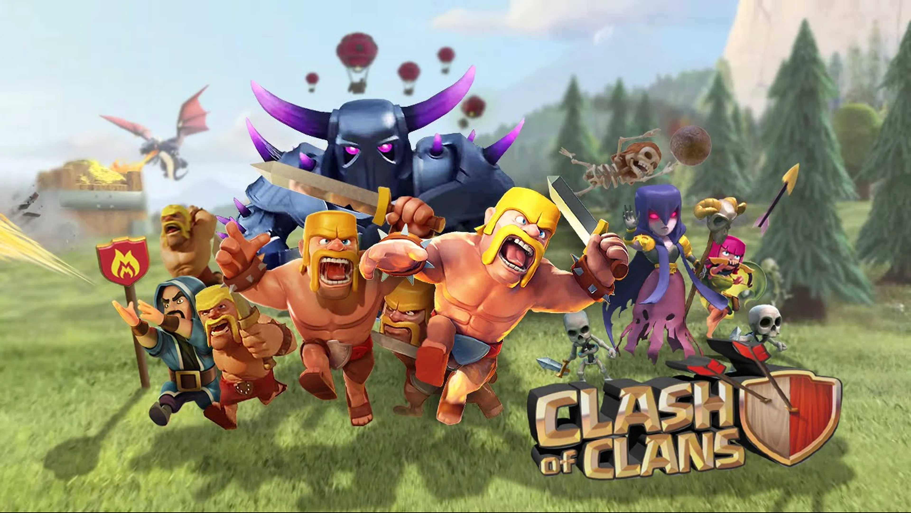

</head>
<section>
    <article>
    <dl>
        <dt>¿Cual es la tropa inicial?</dt>
        <dd> <b>Los barbaros</b></dd>
        <dt>¿Cual es la segunda tropa?</dt>
        <dd> <b>La arquera</b></dd>
        <dt>¿Cual es la unidad para destruir muros?</dt>
        <dd><b>Los rompemuros</b></dd>
       </dl>
       <dt>¿Cual es la primera tropa voladora?</dt>
       <dd> <b>El dragon</b></dd>
    </article>
</section>

</html>